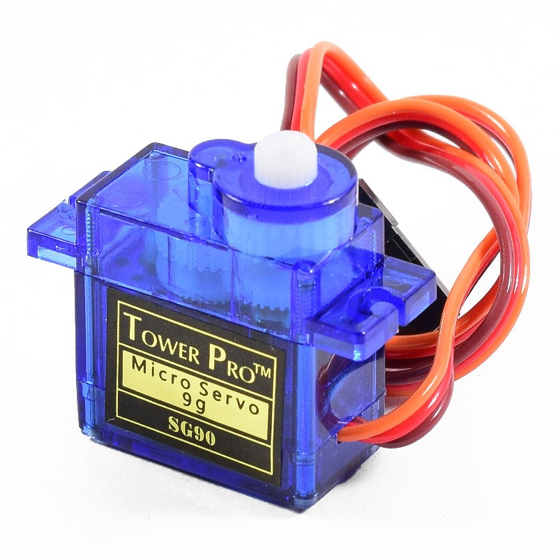

📚 Conocimientos teóricos
¿Qué es un servo motor?
Un servo motor es un dispositivo electromecánico que puede girar o moverse con gran precisión a un ángulo determinado. A diferencia de un motor convencional, un servo incluye un sistema de control que le permite ubicarse en una posición exacta, detenerse y mantenerse allí, lo cual es esencial en aplicaciones que requieren control exacto del movimiento. Generalmente, un servo consta de un motor de corriente continua (DC), un sistema de engranajes, un potenciómetro y un circuito de control.

Código de colores del Servo motor
Un servo motor típico de 3 pines (como los modelos SG90 o MG90S) cuenta con tres cables, cada uno con un color específico que indica su función. Identificarlos correctamente es fundamental para evitar daños al componente y asegurar su correcto funcionamiento en proyectos de robótica o automatización.
Cable marrón o café – GND (Tierra)
- Se conecta al polo negativo.
- Establece la referencia de voltaje.
- Es indispensable para el funcionamiento correcto del servo.
Cable rojo – VCC (Alimentación positiva)
- Se conecta a 5V o 6V, según el modelo.
- Proporciona energía al motor interno.
- Puede alimentarse desde el Arduino o una fuente externa.
Cable naranja – Señal (PWM)
- Se conecta a un pin digital del microcontrolador.
- Recibe una señal de control que determina el ángulo del eje (0° a 180°).
- Controlado con funciones como servo.write() en Arduino.
Para que nos sirve
El servomotor se utiliza para controlar movimientos precisos en un rango limitado, lo que lo hace ideal para:
- Robótica: mover brazos o extremidades de forma precisa.
- Automodelismo: controlar la dirección de autos o aviones.
- Automatización: abrir y cerrar válvulas o compuertas.
- Electrónica educativa y proyectos Arduino: enseñar conceptos de control de movimiento.
- Impresoras 3D y CNC: posicionamiento de piezas.
Gracias a su precisión y facilidad de uso, el servomotor es muy común en la educación y en proyectos de electrónica que requieren controlar movimientos angulares con exactitud.